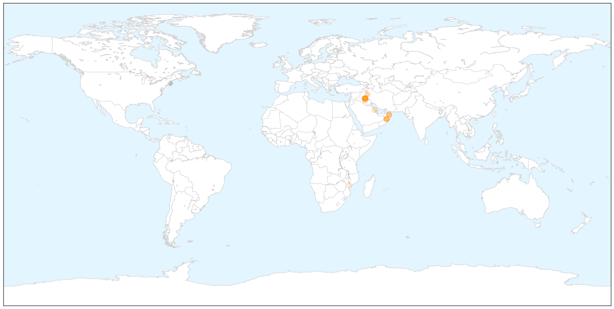
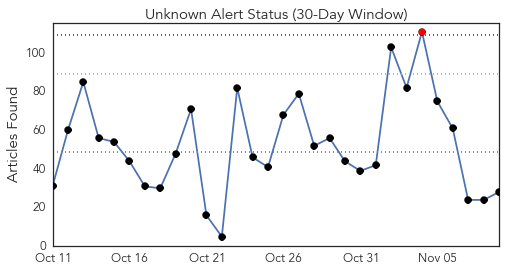
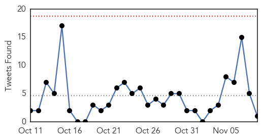
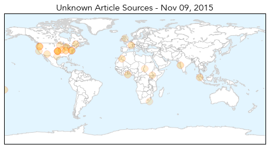
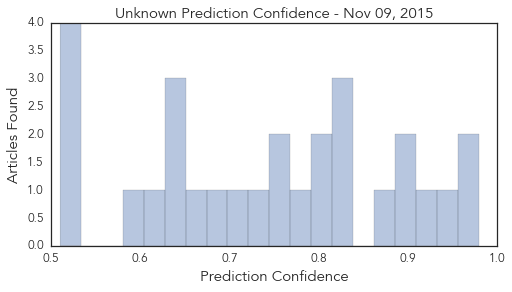

Cholera
30-Day Web Trend
5 alerts, 0 warnings

30-Day Twitter Trend
6 alerts, 0 warnings

Article Locations

X

Article Confidences

Top Articles:
- 0.998
- Oman Health: Ministry advises caution after cholera case detectedHealthcare
- 0.997
- Omani woman tests positive for cholera after visiting IraqHealthcare
- 0.997
- Iraq: amid fears cholera outbreak may worsen, UN agencies step up support to government-led response
- 0.992
- The Jewish Press UNICEF Warning Cholera Spreading from Iraq to Syria, Gulf States, to Become Regional Pandemic
- 0.990
- NRT English
- 0.970
- Over 230,000 vaccinated in Iraq anti-cholera campaign
- 0.961
- Cholera case diagnosed in Oman: health ministry
- 0.944
- Woman diagnosed with cholera in Oman
- 0.942
- Woman tests positive for cholera
- 0.939
- Imported cholera case in Oman
- 0.933
- Over 230,000 vaccinated in Iraq anti-cholera campaign
- 0.920
- Cholera Case Diagnosed in Oman — Naharnet
- 0.838
- Iraq completes round one of oral cholera vaccination campaign - Iraq
- 0.828
- Kingdom free of cholera
- 0.546
- "Cholera Is Coming"
Top Tweets:
- 0.508
- RT: Hey please join us in calling for the UN to FaceJustice for cholera in Haiti !!!
Unknown
30-Day Web Trend
1 alerts, 0 warnings

30-Day Twitter Trend
1 alerts, 0 warnings

Article Locations

Article Confidences
Top Articles:
- 0.979
- Flu is 'miserable' for employers and workers
- 0.962
- Health workers to retest those close to HIV outbreak
- 0.954
- Doctors: Flu vaccine more effective this year
- 0.910
- U.S. Sen. Murray calls for continued support to protect people during Chipotle E. coli outbreak
- 0.907
- Oregon launches campaign addressing syphilis
- 0.888
- Call Your Doctor Immediately If You...
- 0.872
- Pike County Color Drive E. coli Cryptosporidium Outbreak Update
- 0.828
- Staff deaths at leading hospital put India's TB battle in spotlight
- 0.817
- How French Authorities, Industry Mobilised to Contain the Recent Bluetongue Outbreak
- 0.816
- With Norovirus, Salmonella and E. coli O26, it has been a tough few months for Chipotle
- 0.805
- Cases of tuberculosis continue to rise in Nunavik
- 0.793
- Rheumatic heart disease needs to be treated early: US doctors
- 0.784
- Prevalence of intestinal parasites among patients of a Ghanaian psychiatry hospital
- 0.761
- Think Twice to Ease Pressure on A&E this winter
- 0.755
- Asia and the Pacific: Weekly Regional Humanitarian Snapshot (3 - 9 November 2015) - Papua New Guinea
- 0.731
- "Friendship is the key to winning the mutual fears of Christians and Muslims," says to Fides the Bishop of Laghouat
- 0.719
- Indian blockade worsens drug shortage
- 0.689
- Chipotle E. coli O26 Outbreak Holds Steady at 42 Sick in Washington and Oregon
- 0.672
- It's a fact - stress can bring on a fever
- 0.640
- Dozens Sickened by E. coli in the Pacific Northwest Results in the Temporary Closure of 43 Restaurants
- 0.635
- Kidney Disease Rates Have Stabilized in U.S., Study Finds
- 0.635
- Malaria likely to affect 1.3m
- 0.627
- Broken Hill water supply at no risk of parasite infection: expert
- 0.596
- Sudan: 4 million children in Sudan targeted with oral polio vaccine .
- 0.513
- Patients walk as far as 18km as KZN hospital remains under seige
- 0.512
- Doctor claims Scotland's new 'Death Star' super-hospital is more like a death trap
- 0.511
- First Malaria Vaccine May Save Thousands Of Lives, Study Suggests
- 0.510
- Tech researcher receives patent, trademark for vaccine
Top Tweets:
-
No tweets found for Nov 09, 2015